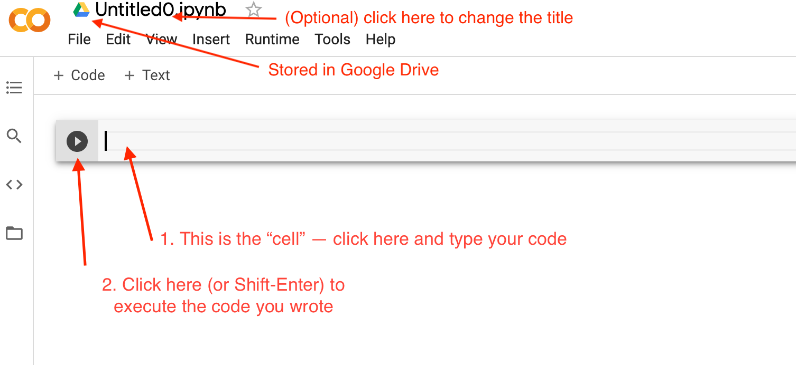
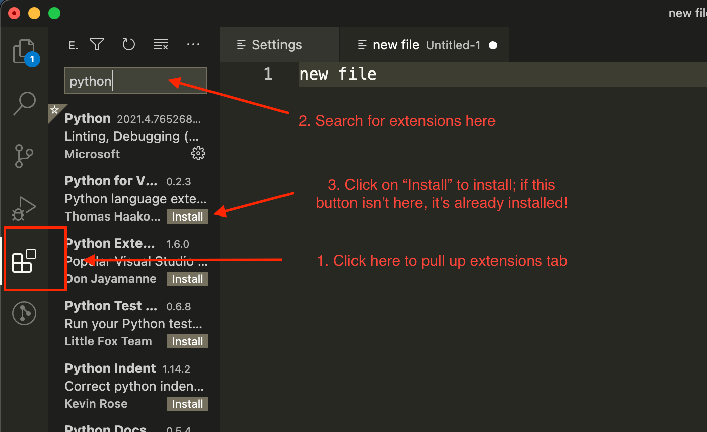
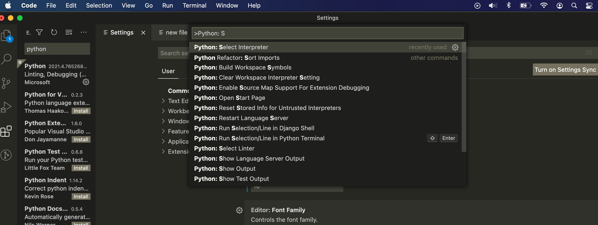
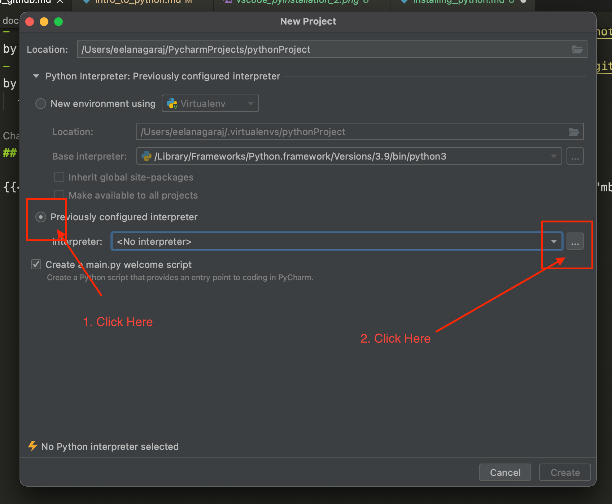
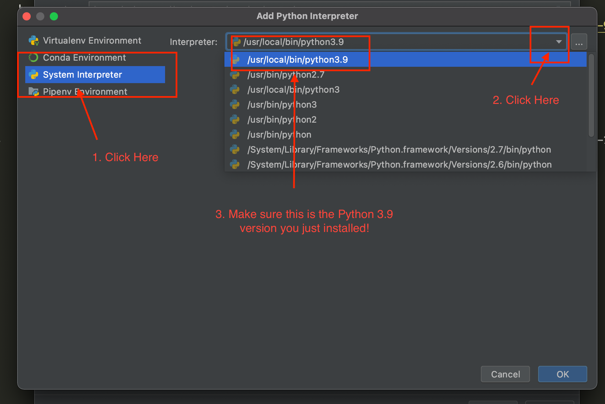

02/04/November - Installing Python

Pre Requisites
- Review the course content from last class and bring any questions you have ! We will answer these questions at the beginning of class. (Remember, if you have a question, so does someone else in the class, so please feel free to ask :) ) Review 26/October - Introduction to Python
- Read through the
Python Installation Overviewsection below. Spend some time thinking about which option may make sense for you. VSCode or PyCharm will give you the most options and would enable you to continue practicing your command line and git/GitHub skills. - Try getting set up with at least one of the options, but don't spend more than 1-2 hours on this if you run into a lot of unexpected problems. We will troubleshoot at the beginning of this session as well as in person at the ReDI school on Thursday for those who have issues installing.
Python Installation Overview
Google Colab
Overview
- free, requires a google account (gmail) and an internet connection
- no need to install Python on your computer, as Colab comes with an interpreter built-in that can run your code
- easy to create a new document or create a "copy" of assignments that we create
- can use the UI to save copies to GitHub or to your Google Drive
- makes it easy to execute and write code in notebook "cells"; it's possible to mix code and text in a readable and clear way
- notebook-style is very common in the Data Science space, so if you think you may want to go in the direction of data science or analytics, this could be a great option
- here's an example iPython Notebook in Colab if you'd like to get a sense of what these are!
- can be used for writing Python Notebooks (
.ipynbonly, no pure.pyfiles) - one of the options used in the Intro to Python course with ReDI school
- recommended if you don't feel as comfortable installing Python on your machine or had difficulties with this, you don't want to work on the command line or use git/GitHub, or you are particularly interested in learning data science/analysis in the future
Setup instructions
- Visit Google Colab. You may need to login with your gmail account or else create a Google Account in order to use Google Colab.
- In the bottom right, click on
New Notebook. This will create a new Python Notebook in your Google Drive. Some notes:- You can rename this file by clicking on the name (probably
Untitled0) in the top left and renaming this. (See diagram below). - (Note) If you want to save this Notebook in GitHub, you can create a repository in GitHub and initialize it with a
READMEor other file. Then, in your Colab notebook, clickFile > Save Copy to GitHub. You may need to authorize your account (let GitHub know that it's ok for Colab to write to your repositories on your behalf), but then you can select this repository, and Colab will save a copy to it with the current state. If you make changes that you want to commit, you can repeat this process.
- You can rename this file by clicking on the name (probably
- In your notebook, click into the cell and write a Python statement of your choice (perhaps, a function to print
hello worldor add two numbers together). Then, click the play button (or useShift + Enter) to execute this line of code. After a few seconds, the result of the expression should appear under the cell.  - Done! Optionally: check out the Welcome to Colaboratory notebook that Google has provided, and watch the short introductory video in it. This will just give you a sense of what you can do in Colab.
VSCode
- free IDE that we have previously used in this class
- requires you to have installed a version of Python on your machine
- can be used for writing and executing Python Notebooks (like in Colab) as well as pure Python scripts and modules (
.ipynband.pyfiles) - can install extensions to add Python syntax-highlighting and coding tips
- will require you to continue practicing your command line and git/GitHub skills
- recommended if you feel comfortable installing Python, want to continue using the command line to navigate your file system and using git/GitHub as you develop your project, or you want to continue deepening your knowledge of one IDE rather than trying out a new platform
Setup Instructions
-
Download and install Python at this link (latest version -- 3.10.0). Complete all of the installer steps.
-
(Optional) in the installed Python folder, there should be an
IDLEprogram. Double click or run this program, which opens a Python interactive shell. This will execute Python code statements. Try it out by printing something (hint: use theprintfunction) -
In VSCode, install the following extensions by clicking on the extensions tab on the left, searching for the following extensions, and clicking "Install" (see diagram):
PythonMagicPythonVisual Studio IntelliCode- Another option:
Python Extension Packwhich includes all three of the above extensions plus a few more

-
In VSCode in the
Viewmenu in the top left corner, clickCommand Palette(or use the shortcutCommand-Shift-P) which should bring down a dropdown menu. Here, type"Python: Select Interpreter"and click on this option. This should bring up a list of all Python versions installed on your computer -- select3.10.0, the version you installed.  -
(Optional) test that this works! Create a new project or a new file with the
.pyending (for example:hello_world.py). Have this file output"Hello World!"(hint: use theprintfunction). Click on the green play button in the top right corner to run the code. This should open the terminal in VSCode and print out the output. If you run into errors, try restarting VSCode to make sure all changes were in place, and then if you run into the same issue, Google this error or ask a teacher or peer in class!
PyCharm (Community Edition)
- Community Edition is free; upgrading to the Professional Edition is not necessary for the purposes of this course
- an IDE (integrated development environment) designed for Python
- requires you to have installed a version of Python on your machine
- built-in awesome features that help you write and execute Python code (function signature help + completion, syntax highlighting)
- can manage different Python virtual environments for you (different versions of Python, different additional packages specific to projects, etc.)
- can be used for writing and executing Python Notebooks (like in Colab) as well as pure Python scripts and modules (
.ipynband.pyfiles) - will require you to continue practicing your command line and git/GitHub skills
- one of the options used in the Intro to Python course with ReDI school
- recommended if you feel comfortable installing Python, want to continue using the command line to navigate your file system and using git/GitHub as you develop your project, or you think you may want to continue learning Python after this course
Setup Instructions
-
Download and install Python at this link (latest version -- 3.10.0). Complete all of the installer steps.
-
(Optional) in the installed Python folder, there should be an
IDLEprogram. Double click or run this program, which opens a Python interactive shell. This will execute Python code statements. Try it out by printing something (hint: use theprintfunction) -
In PyCharm, can select different Python interpreters for each project. Since this is our first project, we need to add and setup a first interpreter. (In the future, you can select this interpreter again, or set up a new one in a similar way.)
-
Open PyCharm and click on
New Project. Choose a location for the new project; your normal coding folder is a good idea, as this will create a new directory within it. -
PyCharm will now ask you to configure your interpreter. Click on
Previously configured interpreter, then on the three dots to the right of the select.  (Note) you can also use PyCharm to create Virtual Environments. This is a more advanced topic and is out of scope for today, but feel free to look into this and reach out if you would like to know more! -
Select
System Installationand select the path to yourPython 3.10installation. Make sure that this is the path to the version of Python you just installed (3.10), not any other version that was already installed on your computer. (Note: the image shows the path to3.9, but it should say3.10for you if you downloaded the latest version of Python.)  -
Click
Okto finish configuring the Python version -
PyCharm may have already created a test
main.pyfile for you. (If not, go ahead and create a file likehello_world.pyand have it print outhello worldor something else!) Then press the green play button in the top right corner to run this code.
Class Curriculum
| Section content | Expected time (mins) | Pre - Requirements |
|---|---|---|
| Lesson Goals | 5 minutes | ❌ |
| Check-in on pre-reqs and questions from last class | 10-15 minutes | Read and attempt installation instructions |
| Short review/demo of each installation option | 20 minutes | Read and attempt installation instructions |
| Break | 10 minutes | ❌ |
| Troubleshooting installation in groups | 5-30 minutes | Read and attempt installation instructions |
| Hands-on Python exercises (in small groups) | rest of class | ❌ |
| Check-out | 5 minutes | ❌ |
0. Lesson Goals
- Have a working development environment on Python.
- Build familiarity with the concepts of data types, functions, and control flow (loops, conditionals)
- Continue writing code in Python
1. Check-In
- What was particularly challenging last class? Are there any remaining questions from last class?
- Was there anything you found strange or surprising last class? What are you excited to learn more about?
- Were there any challenges understanding the pre-requisites for today's class?
2. Short review of each installation option
- Colab, PyCharm, VSCode
- We will also take a look at a Python Notebook (
.ipynb) vs. normal Python file.py. What is the difference between these two formats? How do we run each of these?- Notebooks are made up of "cells" which allow you to execute blocks of code. Cells can also contain Markdown or text, so these can be useful for demoing information or for storing plots, charts, and doing data analysis. Notebooks are commonly used in the Data Science and Machine Learning fields.
.pyfiles are Python files, and can be executed by a Python interpreter viapath/to/python/installation filename.pywhere you replacepath/to/python/installationwith the path to the location that you installed Python on your machine andfilename.pywith the name of your Python file. Your interpreter will also look for amain.pyin your module or the statement:if __name__ == '__main__':in a file to know where to begin running your code. This is where you can tell the interpreter to start calling your functions.
- We will take a look at the
IDLEPython terminal that comes with your Python installation and how you can interactively execute lines of code here. (There are other Python terminals that you can install or use, such asipython.) This can be useful for testing out your logic and syntax as you are writing a longer program as well!
3. Troubleshooting in Groups
We will split up into groups based on whether folks have Python installed or are having issues so that we can troubleshoot and get everyone set up as quickly as possible :) We can also continue this during the in-person session if we can't solve these issues quickly enough!
Groups that are done with installation can start working on the Python problems from the following section.
4. Hands-on Python Tasks
Work in groups to solve the following tasks in your new Python Dev setup. As a group exercise, we expect you to discuss with your group members to solve the problems together. This may mean having one person share their screen and talking through the code you will write together, and making sure you all understand before moving on to the next task. If you do not get through the exercises in class, please keep trying to work through them as homework.
If you are already familiar with Python and would like an additional challenge, try to use git to commit and push your work. (That means, create a local and corresponding remote repository, add your Python file to the repo, commit your changes, and push these to the remote repo.)
There are a lot of tasks, but they are each fairly short. The goal here is to get more practice with data types and the syntax that we learned from the last session.
Setup
First, let's make sure we have a place to write our Python code. Please follow the setup for your dev environment.
Google Colab
Create a new notebook. For each task, we recommend creating a new cell (block within the Colab notebook) and writing your code there. Make sure to evaluate the code in the cell (click the play button, or hit the keys: Shift-Enter or Ctrl-Enter) to check the outputs.
VSCode
Create and save a new file (File > New File) -- you can call it something like python_exercises_nov2.py or whatever else you would like, but make sure it has the .py file extension. Make sure your Python interpreter is configured properly (according to the installation instructions). Enter the following line into your file: print('hello'). Then, try to find the play button in the top right corner and press that, or else right click somewhere within the file and select Run Python File in Terminal. Make sure you can see the output 'hello' in the terminal at the bottom.
PyCharm
You can use the project that you set up as part of installing PyCharm or create a new project, depending on how you would like to organize your work. Create a new file (File > New, or right-clicking on the left-hand bar and selecting New > File) -- you can call it something like python_exercises_nov2.py or whatever else you would like, but make sure it has the .py file extension. Enter the following line into your file: print('hello'). Then, right click on the file tab and select Run 'YOUR_FILE_NAME'. Make sure you can see the output 'hello' in the terminal at the bottom. After the first time, you can also simply click the green play button in the top right corner (and make sure the drop-down next to this shows the file name you want to run).
Backup Option
If your setup is not yet working properly, you can also use the IDLE terminal that comes with the Python installation or else the Python playground from last class.
Task 0 - Comments
Comments are lines of code that Python will intentionally ignore. Comments are a great way to leave notes to yourself and to other people who will later need to figure out what that code does.
There are two ways to write comments in Python:
Using # will tell Python to ignore the remainder of the text on the current line. This is an in-line comment:
1# This is an in-line comment.
You can also have comments that span multiple lines which are done with three single or double quotes to start and 3 to end.
1'''
2This is a mutiline comment
3'''
NOTE: As you write code, you should regularly add comments to clarify the function of parts of your code. Good commenting can help communicate the intent of your code—both for others and for your future self.
For each of the following tasks, add a comment about your code that states which task you are working on (ex. # Code for task 12). Once you have completed a task, you can comment out the printed value from that section, so that you do not continue to see the output of all the previous tasks each time. (There isn't a real output for this task!)
Task 1 - Declare variables
Last class, we went over several Python data types. A "data type" describes the quality or structure of a piece of information. Some of the data types that we saw last class include:
intfor integers (1,0,-4),strfor strings ('asdf', 'b', '234'),floatfor floating point numbers (1.2, 3.44444, 6.2837),boolfor booleans (True, False),listfor lists ([1,2,3], ['qw45', 134]),
For example, computers distinguish between numbers, such as the number 12, and strings, such as "12", "dog", or "123 cats", which are collections of characters. Computers can perform mathematical operations on a number, but not on a string.
Variables allow computers to store and manipulate data in a dynamic fashion. They do this by using a "label" to point to the data rather than using the data itself. Any of the data types may be stored in a variable, and the value of a variable can be modified.
We can create a new Python variable by assigning a value to a label, using the = assignment operator.
1my_name = "tess";
creates a variable called my_name. A variable name can be composed of characters, numbers, and the _ underscore character. It can't start with a number.
Create a variable called our_class and assign it the value "Intro to CS". Print the value of this variable to make sure that it has been set to Intro to CS.
Task 2 - Assign the value of one variable to another
After a value is assigned to a variable using the assignment operator, you can assign the value of that variable to another variable using the assignment operator. Here's an example:
1my_var = 'asdf'
2my_num = my_var
3print(my_num)
4# outputs 'asdf'
Create a variable a and assign it to the value of 5. Assign the contents of a to a new variable, b. Print the values of a and b and make sure these are the same.
Task 3 - Adding
- Create a variable
cand assign it to the value of two integers added together (i.e.2 + 4). Printcand make sure that this is equal to the sum of the two numbers you have added together. - Print the sum of
cand2. - Using the variable
a(value = 5) from Task 2, print the sum ofaandc. - Increment (increase) the value of
cby 2.
Hint: you can increment the value of a variable by using either the += operator (i.e. my_var += 5) or by reassigning the variable (i.e. my_var = my_var + 5).
Task 4 - Subtracting
- Create a variable
dand assign it to the value of an integer subtracted from another (i.e.4 - 3). Printdand make sure that this is equal to the difference of the two numbers. - Print the expression subtracting
dfroma. - Decrement (decrease) the value of
dby 2.
Hint: just like with +=, you can decrement by using the -= operator or by reassigning the variable (i.e. my_var = my_var - 5).
Task 5 - Multiplying
- Create a variable
eand assign it to the value of an integer multiplied by another (i.e.3 * 9). Printeand make sure that this is equal to the product of the two numbers you have multiplied. - Print the expression multiplying
ewitha. - Multiply the value of
eby 2.
Hint: just like with -=, you can multiply the value of a variable by using the *= operator or by reassigning the variable (i.e. my_var = my_var * 5).
Task 6 - Dividing
- Create a variable
fand assign it to the value of a number divided by another (i.e.3 / 9). Printfand make sure that this is equal to the quotient (result of the division). - Print the expression dividing
fbya. - Divide the value of
fby 2.
Hint: just like with *=, you can multiply the value of a variable by using the /= operator or by reassigning the variable (i.e. my_var = my_var / 5).
Note that there are multiple "types" of division. In Python, / (as used above) divides as we normally think of division and can return a floating point value. There is a second operator, //, that performs what is called "integer division" which means that it discards the remainder (i.e. no value after the decimal point).
Task 7 - Modulo (remainder)
The modulo (%) or remainder operator gives the remainder of the division of two numbers. Example:
15 % 2 = 1 because
22 * 2 = 4
35 - 4 = 1 (Remainder)
This can be useful to check, among other things, whether a number is even or odd, by checking the remainder of the division of the number by 2:
117 % 2 = 1 (17 is Odd)
248 % 2 = 0 (48 is Even)
Copy the following code and replace VALUE_HERE with an integer so that the value of mod_output is equal to 3.
1a = VALUE_HERE
2mod_output = 9 % a
3print(mod_output)
Task 8 - String variables
Recall that a string is a series of zero or more characters that are enclosed in either single or double quotes, or triple quotes (the same as with multiline comments). Valid strings in Python include:
1"" # empty string
2"'hello'"
3'adf'
4'"asdf"'
5"""asdf"""
In Python, you can "concatenate", or join, two strings together using the + operator. In Python, 'hello' + ' world' would equal 'hello world'.
- Create two new string variables:
my_first_nameandmy_last_nameand assign them to the values of your first and last name. Print out the value of each variable to confirm this. - Concatenate the two string variables and print this result. Additionally, try to add a space between the two. (Hint: you can concatenate more than one string in an expression, like:
'hello' + ',' + 'world'). - Create a new variable called
my_fullnameand set this to the value ofmy_first_nameconcatenated with a space and thenmy_last_name(as in the exercise directly above this). - Recall the
+=operator that we used to increment a variable. This can also be used to concatenate a string onto the end of a string variable. Try this operator out by adding the line:my_first_name += ' is awesome'and printing outmy_first_name. Is this value what you expected?
Task 9 - String lengths
In Python, you can find the length of a String value by writing using the built-in len function. Example:
1len("redi")
2# outputs 4
3len('hello, world')
4# outputs 12
- Copy the following snippet into your file, and then print the lengths of each of the following variables:
1empty = ''
2language = "Python"
3sentence = "I'm a really long sentence"
- Write a line of code that defines the variable
total_lengthas the sum of the lengths of all three variables above.
Task 10 - Strings as iterables
Bracket notation, or "array indexing" is a way to get a character at a specific index within a string. (This also works for lists and other ordered iterables). Most modern programming languages, like Python, don't start counting at 1 like humans do, but instead start at 0. This is referred to as "zero-indexing".
For example, the character at the index 0 in the word Hello is H. So if word = "Hello", you can get the value of the first letter of this string by using: word[0].
In Python, you can also use negative numbers to index backwards into a word. For example, word[-1] will get you the last letter in the word.
- Use bracket notation to find the first character in
sentencefrom task 9, and print this out. - Use bracket notation and the
lenoperator to find the last letter in the word, and print this out. (Hint: the last index is equal to the length of the word - 1 (because of zero-indexing)). - Use the negative number indexing to find and print the second to last letter in
sentence.
Task 11 - Slicing strings
You can use the same principle we just used to retrieve a part of the string (sometimes referred to as a "substring"). Here are some examples (note: leaving the index off before or after the : is shorthand for the start and end of the word):
1word = "Hello!"
2word[1:2] # outputs: "e"
3word[0:3] # outputs: "Hel"; equivalent to word[:3]
4word[:] # outputs: "Hello!"
5word[3:6] # outputs: "lo!"; equivalent to word[3:]
6word[2:-2] # outputs: "ll"; equivalent to word[2:len(word) - 2]
- Using the variable
sentencefrom task 9,sentence = "I'm a really long sentence", create a new variableonly_reallythat contains only the wordreallyin the sentence, and print the value of this variable. - Using the variable
sentenceagain, create a new variable calledfirst_lettersthat contains the first 4 letters ofsentence.
Task 12 - Lists
Lists are one of the more complex Python data types. Lists hold other data types like strings, integers, floats, and even lists. Each list item has an index, like strings. The index starts from 0. Just as with strings, the len function also gives you the length of a list. Also like strings, you can slice a list, which means to get some part of the overall list. Here are some examples to illustrate this:
1# creating some lists
2fruits = ['apple','banana','orange']
3stuff = [12, 'asdf', 123.013, [1,2,3]]
4
5# here's the indexing
6fruits = ['apple','banana','orange']
7# 0 1 2
8# like strings, lists can also use negative indexing
9fruits = ['apple','banana','orange']
10# -3 -2 -1
11
12# get the length of the list
13len(fruits)
14# outputs: 3
15
16# slice a list
17fruits[:2]
18# outputs: ['apple', 'banana']
19fruits[1:3]
20# outputs: ['banana', 'orange']
- Create a list with the first names of your breakout room group, and assign this to the variable
first_names. Print the list. - Print out the value of the second name in
first_names. (Hint: use the bracket notation asa with strings.) - Print the length of the list of names.
- Create a slice of the list containing the first two names and print this slice.
Task 13 - Appending and removing elements from a list
There are several methods that you can use with lists. The .append() method adds an item to a list, while the .remove() method removes an item from the list:
1fruits = ['apple','banana','orange']
2fruits.append('mango')
3# value of fruits is now: ['apple','banana','orange','mango']
4fruits.remove('banana')
5# value of fruits is now: ['apple','orange','mango']
- Using the list of your names (
first_names), add one name and print the list. - Using the list of your names (
first_names), remove one name and print the list.
Task 14 - Dictionaries
Dictionaries are a Python data structure. While lists allow you to create ordered collections of values, dictionaries allow you to create collections of key / value pairs. An analogy for a dictionary is a telephone book: you can look up a telephone number (value) by a person's name (key).
Here are some dictionary examples:
1empty_dict = dict()
2dog = { 'name': 'Roger' }
3# assign the value: 8 to the key: 'age'
4dog['age'] = 8
5# the dog dictionary now looks like: { 'name': 'Roger', 'age': 8 }
6
7# access a value by a key
8dog['name']
9# outputs: 'Roger'
Dictionaries also contain the .keys(), .values(), and .items() methods which return iterables (like lists) of these values:
1list(dog.keys())
2# outputs: ['name', 'age']
3list(dog.values())
4# outputs: ['Roger', 8]
5list(dog.items())
6# outputs: [('name', 'Roger'), ('age', 8)]
- Create a dictionary called
personwith the keysfirst_nameamdlast_nameand give them some values. Print out the dictionary. - In the
persondictionary, assign thejobkey to the valueprogrammer, and print out the dictionary. - Access and print out the value of the
first_namekey in thepersondictionary. - Print out the keys, values, and items in the
persondictionary.
Task 15 - Booleans
Booleans may only be one of two values: True or False. These are like on-off switches, where True is on and False is off. These states are mutually exclusive -- a condition can only be either True or False but not both. You can use the not keyword to "flip the switch" of the boolean value.
1val1 = True
2val2 = not True
3print(val2)
4# outputs: False
- Create a variable called
boolean_varand set it toFalse. - Print the value of the opposite of
boolean_var(usingnot).
Task 16 - Comparisons
There are many comparison operators in Python. All of these operators return a boolean True or False value. Here are some of these operators:
==: equality operator: compares two values and returns True if they're equivalent or False if they are not!=: inequality operator: opposite of equality, returns True if two values are not equivalent and False if they are>: greater than operator: returns True if the left side is greater than the right side and False if not<: less than operator: returns True if the left side is less than the right side and False if not
Note that you can assign a boolean expression to a variable:
1a = 1 > 2
2print(a)
3# outputs: False
Assign these examples to variables and print them out:
1 == 11 == '1'2 != '2'2 < 42 > 31 != True0 != False
Were any of these results surprising?
Task 17 - Control Flow
When you're dealing with booleans, and expressions that return a boolean in particular, we can execute different code depending on their True or False values, using if, elif, and else statements. Pay attention to the indentation and white space in Python, as this is very important! Indented blocks "belong" to the overhanging lines above them; you can think of this as "stepping into" indented blocks if conditions evaluate to true.
This is a conditional statement: if CONDITION: means: "if CONDITION evaluates to True, then execute the indented code that follows directly after the statement"
Here's an example for if...else:
1if CONDITION_A:
2 STATEMENT_A
3else:
4 STATEMENT_B
In this example, "if CONDITION_A evaluates to True, then execute STATEMENT_A. Otherwise (if CONDITION_A evaluates to False), then execute STATEMENT_B.
And for if...elif...else:
1if CONDITION_A:
2 STATEMENT_A
3elif CONDITION_B:
4 STATEMENT_B
5else:
6 STATEMENT_C
(Note: elif stands for "else if", and you can have as many of these as you want in between the beginning if and ending else statements.)
In this example, "if CONDITION_A evaluates to True, then execute STATEMENT_A only. Otherwise (if CONDITION_A evaluates to False), then check if CONDITION_B evaluates to True and if so, execute STATEMENT_B only. If both CONDITION_A and CONDITION_B evaluate to False, then execute STATEMENT_C. Note that here, we are only ever execute one of the STATEMENT_'s, even if multiple conditions evaluate to True.
- Use the definition:
my_list = [1, 2, 3]. Create an if statement that checks if the last value of the list is equal to 3 and if so, prints "the condition was true". - Building off of the above exercise, make the condition false (so that "the condition was true" no longer prints).
- Now, add an
elseclause that prints "the condition was false". - Now, add an
elifcondition that checks if the length of the list is equal to 3 and if so, prints "the elif condition is true".
Task 18 - Functions
A function lets us create a set of instructions that we can run when needed. Functions are essential in Python and in many other programming languages. They help us create meaningful programs, because they allow us to decompose a program into manageable parts, and they promote readability and code reuse.
Here is an example function:
1def greet(name):
2 print('Hello,', name)
This is the function definition. There is a def keyword, so that the Python interpreter knows that this is a function definition, function name (greet), arguments (name in this case), and a body (the set of instructions, which is the part that follows the colon and is indented one level on the left).
To run this function, we must call it. This is the syntax to call the function: greet('Rami')
We can execute this function as many times as we want to.
The name of the function, hello, is very important. It should be descriptive, so anyone calling it can imagine what the function does.
- Write a function called
was_it_sunnythat takes in a boolean argumentit_was, that prints "yes" if the parameter value was True and "no" otherwise. Call this function twice, once with the valueTrueand once withFalse, and print the outputs of these calls. - Write a function that takes in 3 values and returns a list containing those three values.